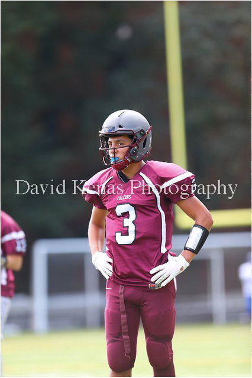

Athletics
Since I was young, I have always been involved in sports. I began playing baseball, twice being selected to the All-Star team for my age group in my league. Then came basketball, as I played at my local Boys and Girls Club. In additon, I began playing football in 6th grade, when I realized that football was my favorite sport. In high school, I have continued football and basketball, and added outdoor track as well.

Clubs and Hobbies
In additon to sports, I also enjoy coding as a hobbie. I have been able to also take coding classes in my school, which has made me a better coder. I ama slo an active participant in my high school community, being involved in the Mock Trial Club, the HOLA affinity group, as well as helping plan and execute CET (Community Engagement Team) events. Outside of school, I play drums and participate in community service via my local church.